switch/case for Strings
Tobias Hoffmann
C++ User Treffen Aachen, 2018-09-13
C/C++: switch for non-integers - Stack Overflow
switch statement - cppreference.com
fastmatch.h
switch.hpp
Can we do better?
We want to:
- compare only the remainder
- get rid of the sorting requirement
- keep "O(log n)" lookup complexity
- still have clean code
Trie
- Raben
- Rabe
- Rasten
- Rasen
Trie

- Raben
- Rabe
- Rasten
- Rasen
cttrie usage example i
#include "cttrie.h"
...
const char *str = ...; // oder std::string, ...
TRIE(str) printf("E\n");
CASE("Raben") printf("0\n");
CASE("Rabe") printf("1\n");
CASE("Rasten") printf("2\n");
CASE("Rasen") printf("3\n");
ENDTRIE;
cttrie usage example ii
printf("%d\n",
TRIE(str) return -1;
CASE("abc") return 0;
CASE("bcd") return 1;
ENDTRIE);
Agenda
- Lifting the Hood
- C++ template techniques, index sequences
- Trie as C++ types
- Trie lookup
- String literals and TMP
- Building the trie
- Additional features
- Two applications
- Extensions to cttrie, other approaches
Lifting the Hood i
#define TRIE(str) CtTrie::doTrie((str), [&]{
#define CASE(str) }, CSTR(str), [&]{
#define ENDTRIE })
template <typename ArgE, typename... Args>
constexpr auto doTrie(stringview str,
ArgE&& argE, Args&&... args)
-> decltype(argE())
{ ... }
// CSTR("abc") -> string_t<...>
Lifting the Hood ii
struct stringview {
template <unsigned int N>
constexpr stringview(const char (&ar)[N]) // implicit
// strips trailing \0
: begin(ar), size((ar[N-1]==0) ? N-1 : N) {}
template <typename String,
typename Sfinae=decltype(
std::declval<String>().c_str(),
std::declval<String>().size())>
constexpr stringview(String&& str)
: begin(str.c_str()), size(str.size()) {}
stringview(const char *begin)
: begin(begin), size(std::strlen(begin)) {}
constexpr stringview(const char *begin, unsigned int size)
: begin(begin), size(size) {}
constexpr bool empty() const {
return (size==0);
}
constexpr char operator*() const {
// assert(!empty()); // or: throw ?
return *begin;
}
constexpr stringview substr(unsigned int start) const {
return { begin+start,
(start<size) ? size-start : 0 };
}
constexpr stringview substr(unsigned int start,
unsigned int len) const {
return { begin+start,
(start<size) ?
(len<size-start) ? len : size-start
: 0 };
}
private:
const char *begin;
unsigned int size;
};
C++ template techniques
// provides pack_tools::get_index<I>(Ts&&... ts)
// (≙ std::get<I>(std::make_tuple(ts...)) )
namespace pack_tools {
namespace detail {
template <unsigned int> struct int_c {};
template <unsigned int I>
constexpr void *get_index_impl(int_c<I>) // invalid index
{
return {};
}
template <typename T0, typename... Ts>
constexpr T0&& get_index_impl(int_c<0>,
T0&& t0, Ts&&... ts)
{
return (T0&&)t0;
}
template <unsigned int I, typename T0, typename... Ts>
constexpr auto get_index_impl(int_c<I>,
T0&& t0, Ts&&... ts)
-> decltype(get_index_impl(int_c<I-1>(), (Ts&&)ts...))
{
return get_index_impl(int_c<I-1>(), (Ts&&)ts...);
}
} // namespace detail
template <unsigned int I, typename... Ts>
constexpr auto get_index(Ts&&... ts)
-> decltype(detail::get_index_impl(detail::int_c<I>(),
(Ts&&)ts...))
{
static_assert((I<sizeof...(Ts)), "Invalid Index");
return detail::get_index_impl(detail::int_c<I>(),
(Ts&&)ts...);
}
} // namespace pack_tools
Index sequences i
// using seq3_t = std::make_index_sequence<3>; // not c++11
using seq3_t = decltype(detail::make_index_sequence<3>());
// => seq3_t = detail::index_sequence<0, 1, 2, 3>;
template <unsigned int... Is>
void foo(detail::index_sequence<Is...>) { ... }
foo(detail::make_index_sequence<3>());
// c++14: index_sequence = integer_sequence<size_t, Is...>;
Index sequences ii
struct nil {};
template <bool B>
using Sfinae = typename std::enable_if<B>::type;
template <unsigned int... Is>
struct index_sequence {};
template <unsigned int N, unsigned int... Is,
typename =Sfinae<N==0>>
constexpr index_sequence<Is...> make_index_sequence(...)
{ return {}; }
template <unsigned int N, unsigned int... Is,
typename =Sfinae<(N>0)>>
constexpr auto make_index_sequence(...)
// argument forces ADL
-> decltype(make_index_sequence<N-1, N-1, Is...>(nil()))
{ return {}; }
Index sequences iii
namespace detail {
template <unsigned int... Is,
typename ArgE, typename... Args>
constexpr auto doTrie(index_sequence<Is...>,
stringview str,
ArgE&& argE, Args&&... args)
-> decltype(argE())
{
return checkTrie(
makeTrie<0>(
nil(),
pack_tools::get_index<(2*Is)>((Args&&)args...)...),
str, (ArgE&&)argE,
pack_tools::get_index<(2*Is+1)>((Args&&)args...)...);
}
} // namespace detail
template <typename ArgE, typename... Args>
constexpr auto doTrie(stringview str,
ArgE&& argE, Args&&... args)
-> decltype(argE())
{
return detail::doTrie(
detail::make_index_sequence<sizeof...(args)/2>(),
str, (ArgE&&)argE, (Args&&)args...);
}
Trie as C++ types
namespace CtTrie {
using pack_tools::detail::int_c;
template <int Char, typename Next>
struct Transition {};
// multiple inheritance used for cttrie_sw256 ...
template <typename... Transitions>
struct TrieNode : Transitions... {};
// ...Trie lookup i
check(node, str):
if (str.empty):
if (node.Transition[0].Char==-1):
return node.Transition[0].Next // i.e. index
return error
switch (str[0]):
case node.Transition[0].Char:
return check(node.Transition[0].Next, str[1:])
case node.Transition[1].Char:
return check(node.Transition[1].Next, str[1:])
...
return error // (default)Trie lookup ii
// possible via Transition<-1, int_c<...>>
template <typename FnE, typename... Fns>
constexpr auto checkTrie(TrieNode<> trie, stringview str,
FnE&& fne, Fns&&... fns)
-> decltype(fne())
{
return fne();
}
template <int Char, typename Next,
typename FnE, typename... Fns,
typename =Sfinae<(Char>=0)>>
constexpr auto checkTrie(
TrieNode<Transition<Char,Next>> trie,
stringview str, FnE&& fne, Fns&&... fns)
-> decltype(fne())
{
return (!str.empty() && (*str==Char))
? checkTrie(Next(), str.substr(1),
(FnE&&)fne, (Fns&&)fns...)
: fne();
}
template <typename... Transitions,
typename FnE, typename... Fns>
constexpr auto checkTrie(
TrieNode<Transitions...> trie,
stringview str, FnE&& fne, Fns&&... fns)
-> decltype(fne())
{
return (!str.empty())
? Switch(*str, str.substr(1),
trie, (FnE&&)fne, (Fns&&)fns...)
: fne();
}
template <unsigned int Index, typename... Transitions,
typename FnE, typename... Fns>
constexpr auto checkTrie(
TrieNode<Transition<-1,int_c<Index>>, Transitions...>,
stringview str, FnE&& fne, Fns&&... fns)
-> decltype(fne())
{
return (str.empty())
? pack_tools::get_index<Index>((Fns&&)fns...)()
: checkTrie(TrieNode<Transitions...>(), str,
(FnE&&)fne, (Fns&&)fns...);
}
Trie lookup: Switch i
template <...>
auto Switch(unsigned char ch, stringview str,
TrieNode<Transitions...>, FnE&&, Fns&&...)
-> decltype(fne())
{
switch (ch) {
{
case (Transitions::Char):
return checkTrie(Transitions::Next(), str,
(FnE&&)fne, (Fns&&)fns...);
}...
}
return fne();
}Trie lookup: Switch ii
template <int Char0, typename Next0,
int Char1, typename Next1,
typename FnE,typename... Fns>
auto Switch(unsigned char ch, stringview str,
TrieNode<Transition<Char0,Next0>,
Transition<Char1,Next1>>,
FnE&& fne, Fns&&... fns)
-> decltype(fne())
{
switch (ch) {
case Char0: return checkTrie(Next0(), str, (FnE&&)fne, (Fns&&)fns...);
case Char1: return checkTrie(Next1(), str, (FnE&&)fne, (Fns&&)fns...);
}
return fne();
}
Trie lookup: Switch iii
// TNext obtained by partial specialization!
next_or_nil<I>(node) =
has_base(node, Transition<I, TNext>) ? TNext : nil
type table[256] = { next_or_nil<Is>(node)... };
// actually: type_array<A00,A01,...> parameter
switch (str[0]):
case 0: static_if (is_nil(table[0])): return error;
return check(table[0], str[1:])
case 1: static_if (is_nil(table[1])): return error;
return check(table[1], str[1:])
...
case 255:
return check(table[255], str[1:])
String literals and TMP
Problem: foo<"abc"> as template parameter?!Idea: "abc"[1] == 'b' is possible
template <unsigned char... Chars>
struct string_t {
static constexpr unsigned int size() {
return sizeof...(Chars);
}
static const char *data() {
static constexpr const char data[]={Chars...};
return data;
}
};
namespace detail {
template <typename Str, unsigned int N, unsigned char... Chars>
struct make_string_t
: make_string_t<Str, N-1, Str().chars[N-1], Chars...> {};
template <typename Str, unsigned char... Chars>
struct make_string_t<Str, 0, Chars...> {
typedef string_t<Chars...> type;
};
} // namespace detail
#define CSTR(str) []{ \
struct Str { const char *chars = str; }; \
return ::detail::make_string_t<Str,sizeof(str)>::type(); \
}()Building the trie i
makeTrie(String0, String1, ..., StringN):
for each I=0...N:
trie = trieAdd<I, StringI>(trie)template <unsigned int I>
constexpr TrieNode<> makeTrie(nil) // nil forces adl
{ return {}; }
template <unsigned int I,
typename String0, typename... Strings>
constexpr auto makeTrie(nil, String0, Strings...)
-> decltype(
trieAdd<I, String0>(
makeTrie<I+1>(nil(), Strings()...)
))
{ return {}; }Building the trie ii
trieAdd<Index, String>(TrieNode<Transitions...>):
insertSorted<Index>(String, TrieNode< | Transitions...>)
insertSorted:
- Either there is no transition yet for the next char:
Insert new Transition into TrieNode at appropriate position. - Or, when there is one:
Take transition, repeat. -
Start of iteration is
(TrieNode<>(), Transitions...).
Building the trie iii
trieAdd<Index, String>(TrieNode<Transitions...>):
insertSorted<Index>(String, TrieNode< | Transitions...>)template <unsigned int Index, typename String,
typename... Transitions>
constexpr auto trieAdd(TrieNode<Transitions...>)
-> decltype(
insertSorted<Index>(
nil(), String(), // nil forces adl
TrieNode<>(), Transitions()...))
{ return {}; }Building the trie iv: Chains
transitionAdd<Index>(string_t<...>) →
(string_t<Ch0, Chars...>)
= Transition<Ch0,
transitionAdd<Index>(string_t<Chars...>)>
(string_t<>)
= Transition<-1, int_c<Index>>
(string_t<'\0'>) // alternative ...
= Transition<-1, int_c<Index>>Building the trie v: Chains
template <unsigned int Index>
constexpr Transition<-1, int_c<Index>>
transitionAdd(nil, string_t<0>) // or: string_t<>
{ return {}; }
template <unsigned int Index,
unsigned char Ch0, unsigned char... Chars>
constexpr Transition<Ch0, TrieNode<decltype(
transitionAdd<Index>(nil(), string_t<Chars...>())
)>>
transitionAdd(nil, string_t<Ch0, Chars...>)
{ return {}; }Building the trie vi
insertSorted<Index>(
string_t<Ch0, Chars...> s,
TrieNode<Prefix... | Transition<Ch,Next>, Transitions...>
):
if (Ch>Ch0):
TrieNode<Prefix..., transitionAdd<Index>(s),
Transition<Ch,Next>, Transitions...>
else if (Ch==Ch0):
TrieNode<Prefix...,
Transition<Ch,
trieAdd<Index, string_t<Chars...>>(Next())>,
Transitions...>
else // (Ch<Ch0)
insertSorted<Index>(s,
TrieNode<Prefix...,
Transition<Ch, Next> | Transition...>)Building the trie vii
template <unsigned int Index,
unsigned char... Chars,
typename... Prefix, typename... Transitions,
typename =Sfinae<(sizeof...(Chars)==0 ||
sizeof...(Transitions)==0)>>
constexpr auto insertSorted(nil,
string_t<Chars...> s,
TrieNode<Prefix...>, Transitions...)
-> TrieNode<Prefix...,
decltype(transitionAdd<Index>(nil(), s)),
Transitions...>
{ return {}; }
template <unsigned int Index,
unsigned char Ch0, unsigned char... Chars,
typename... Prefix,
int Ch, typename Next,
typename... Transitions,
typename =Sfinae<(Ch>Ch0)>>
constexpr auto insertSorted(nil,
string_t<Ch0, Chars...> s,
TrieNode<Prefix...>,
Transition<Ch,Next>,
Transitions...)
-> TrieNode<Prefix...,
decltype(transitionAdd<Index>(nil(), s)),
Transition<Ch,Next>,
Transitions...>
{ return {}; }
template <unsigned int Index,
unsigned char Ch0, unsigned char... Chars,
typename... Prefix,
int Ch, typename Next,
typename... Transitions,
typename =Sfinae<(Ch==Ch0)>>
constexpr auto insertSorted(nil,
string_t<Ch0, Chars...> s,
TrieNode<Prefix...>,
Transition<Ch, Next>,
Transitions...)
-> TrieNode<
Prefix...,
Transition<Ch,
decltype(trieAdd<Index, string_t<Chars...>>(Next()))>,
Transitions...>
{ return {}; }
template <unsigned int Index,
unsigned char Ch0, unsigned char... Chars,
typename... Prefix,
int Ch, typename Next,
typename... Transitions,
typename =Sfinae<(Ch<Ch0)>>
constexpr auto insertSorted(nil,
string_t<Ch0, Chars...> s,
TrieNode<Prefix...>,
Transition<Ch, Next>,
Transitions...)
-> decltype(insertSorted<Index>(nil(), s,
TrieNode<Prefix..., Transition<Ch, Next>>(),
Transitions()...))
{ return {}; }
Additional features
template <typename TrieNode, typename FnE, typename... Fns>
constexpr auto checkTrie(TrieNode trie, stringview str,
FnE&& fne,Fns&&... fns)
-> decltype(fne())
{
return detail::checkTrie(trie, str,
(FnE&&)fne, (Fns&&)fns...);
}
// Strings must be string_t
template <typename... Strings>
constexpr auto CtTrie::makeTrie(Strings... strs)
-> decltype(detail::makeTrie<0>(detail::nil(), strs...))
{ return {}; }
// ---
auto trie=CtTrie::makeTrie(
CSTR("Rosten"),
CSTR("Raben"));
// CtTrie::checkTrie(trie, "ab", [&]{...}, [&]{...}, ...);
#include "cttrie-print.h"
CtTrie::printTrie(trie); // or: decltype(trie)() ...
Application: XML
for (node=node->children; node; node=node->next) {
if (node->type != XML_ELEMENT_NODE) {
continue;
}
TRIE((const char *)node->name)
fprintf(stderr, "Warning: unknown ltconfig/text element: %s\n", (const char *)node->name);
CASE("in")
ensure_onlyattr(node, "!rel at");
unique_xmlFree rel(xmlGetProp(node, (const xmlChar *)"rel"));
txt.in.rel_loop =
TRIE((const char *)rel)
throw UsrError("Unknown text/in/@rel value: %s\n", (const char *)rel);
return bool(); // needed for return type deduction
CASE("in") return false;
CASE("loop") return true;
ENDTRIE;
txt.in.at = get_attr_int(node, "at", 0);
parse_fade_only(node, txt.in.fade_duration);
CASE("out")
ensure_onlyattr(node, "at");
txt.out.at = get_attr_int(node, "at", 0);
parse_fade_only(node, txt.out.fade_duration);
ENDTRIE;
}
Extensions to cttrie
- Partial/substring matching
- Case insensitive
- Suffix-at-once
Other approaches
- Hashing/Map (runtime)
e.g.: http://llvm.org/doxygen/ classllvm_1_1StringSwitch.html - gprof
- Extend language?